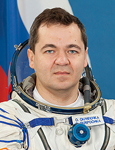

Lyndon B. Johnson Space Center
Houston, Texas 77058
|
National Aeronautics and Space Administration Lyndon B. Johnson Space Center Houston, Texas 77058 |
 |
Biographical Data |
||
Skripochka Oleg Ivanovich
soyuz tma flight engineer
iss flight engineer
RSC energia Test-Cosmonaut
PERSONAL DATA: Born December 24, 1969 in Nevinnomysk, Stavropol Region, Russia. Married to Elena Vladimirovna Milovanova. They have a daughter, Darya, born in 2005, and a son, Denis, born in 2008. Oleg’s hobbies include parachute sport and bicycle tourism.
EDUCATION: Graduated from physics and mathematics high school #28 Zaporozhye in 1987 where he was a member of the Young Cosmonauts group named after V. Komarov. He then entered the Bauman State Technical University. He graduated in 1993 with a bachelor degree in mechanical engineering.
AWARDS: “Gagarin pin” from the Federal Space Agancy.
EXPERIENCE: From 1987 through 1991, Skripochka had work experience at RSC Energia as a test subject, test mechanic, and as a mechanic from 1991 to 1993 at the project department. After graduating from the Bauman State Technical University he worked at the Russian Space Corporation Energia from 1993 - 1997 as an engineer at the transport and cargo vehicles ground hardware development and testing project department. Oleg is a 1st class sky diver with 300 parachute jumps.
SPACEFLIGHT TRAINING: In August 1997, he was selected as an RSC Energia cosmonaut-candidate.
From December 1997 - November 1999, he completed basic spaceflight training. In November, 1999 he was qualified as a test cosmonaut.
Since January 2000, he trained in the test-cosmonaut group for the ISS program.
From April, 2007 - April, 2008 he trained as an ISS-17 backup crewmember (Soyuz TMA and ISS flight engineer).
Skripochka served as flight engineer aboard the Soyuz TMA-M when it launched October 7, 2010 to the International Space Station. During his 5-month stay aboard the station, he served as a flight engineer for Expedition 25/26, spending 159 days in space.
MARCH 2011